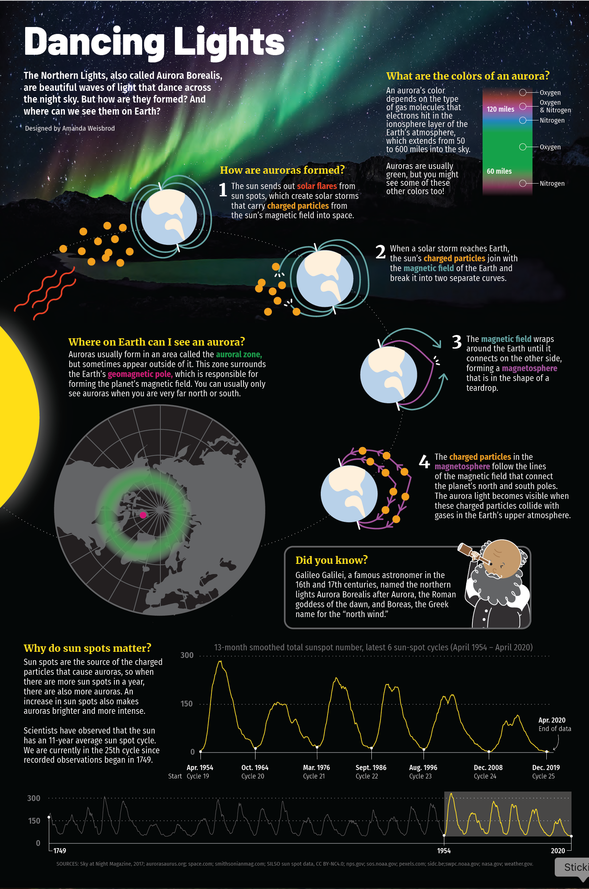
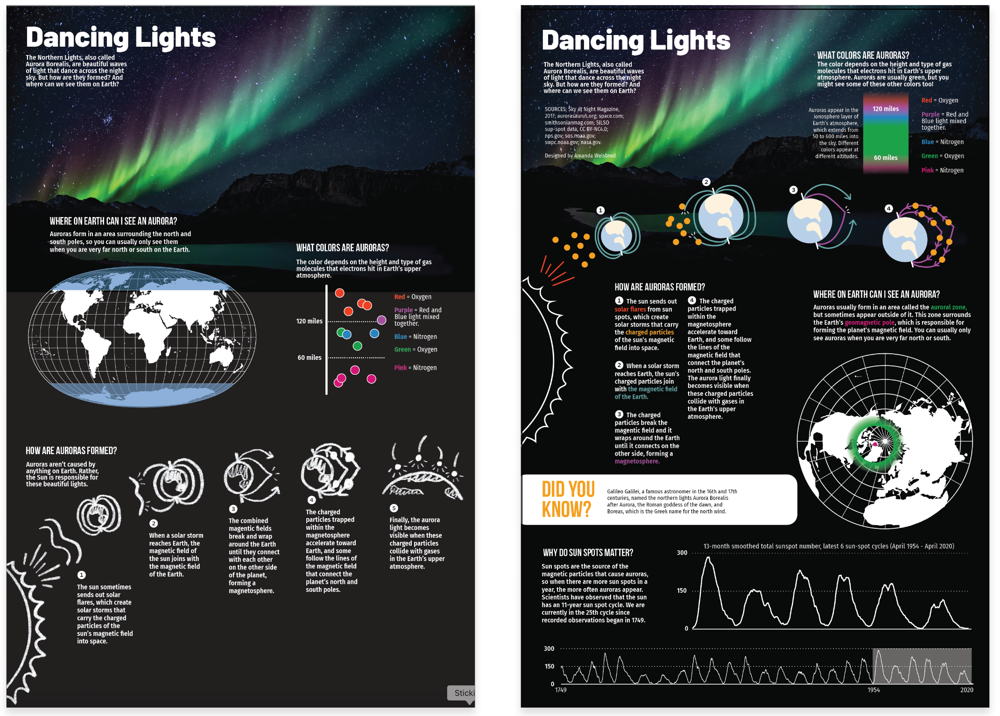

This infographic visually explains the science behind the Northern Lights, also known as the Aurora Borealis. It illustrates the complex interplay of solar winds, magnetic fields, and atmospheric particles that create this stunning natural phenomenon.
This graphic was produced for an infographics course at Ohio University. It is intended for a young audience (children 5-10 years old) that is interested in science. (Amanda Weisbrod)
My role in this project was to decide on a focus, research that focus, cultivate data, write all of the text, layout the pages and design the infographic itself. I was inspired by Highlights Magazine, which I loved as a child. I also watched several different YouTube videos on the topic to see how others have attempted to explain this phenomenon visually. The layout of this project gave me some trouble, as I wanted it to flow organically, yet not confusing to read. I believe, in the end, I achieved this goal.
I created everything in this graphic from the illustrations to the text and data visualizations. This included researching the science behind the Northern Lights and finding ways to visually represent complex concepts in an engaging way. In the end, I learned a lot myself about this phenomenon, and enjoyed working on a project aimed towards kids.
Programs used: Adobe Illustrator, Adobe Photoshop, Procreate
My first and second drafts of The Dancing Lights project. (Amanda Weisbrod)
Drafts three and four of The Dancing Lights project. (Amanda Weisbrod)